Results
Datasets
wut/circles (n=4000, d=2)
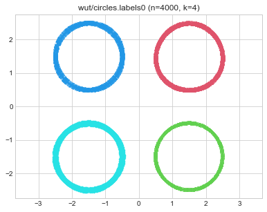 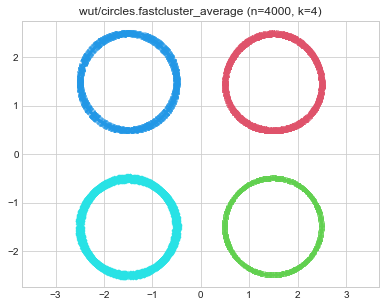 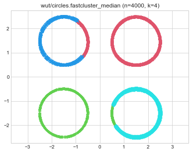 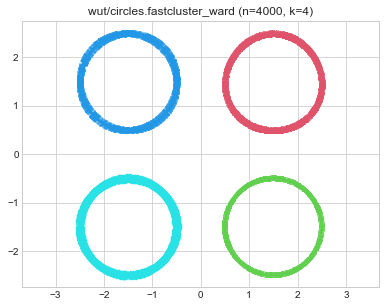 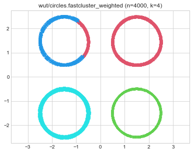 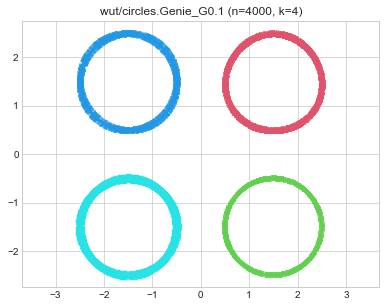 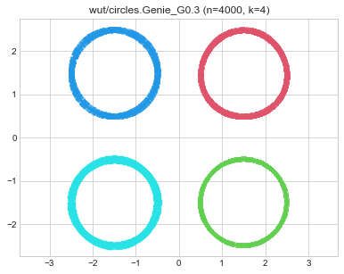 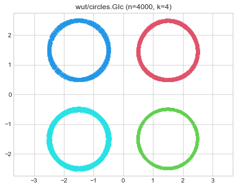 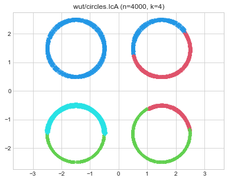 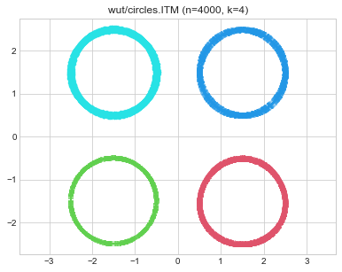 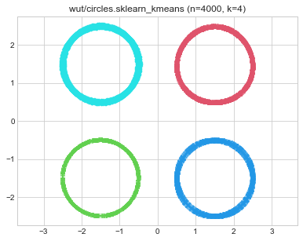 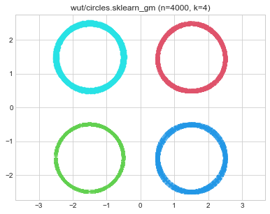
wut/cross (n=2000, d=2)
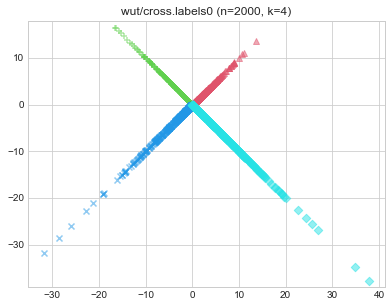 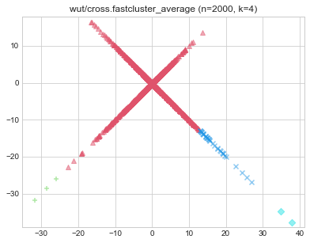 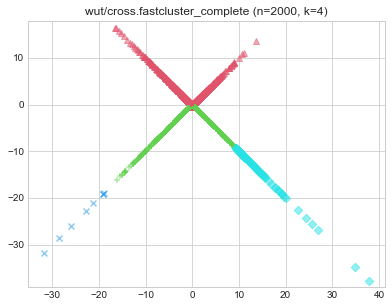 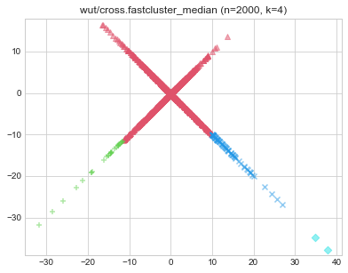 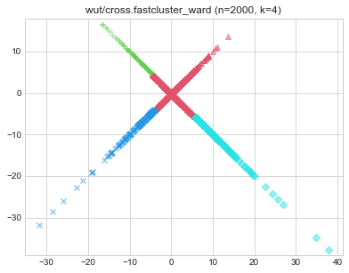 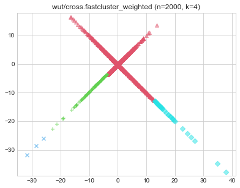 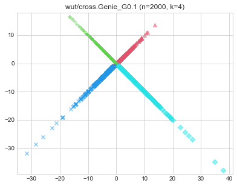  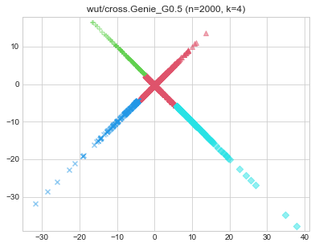 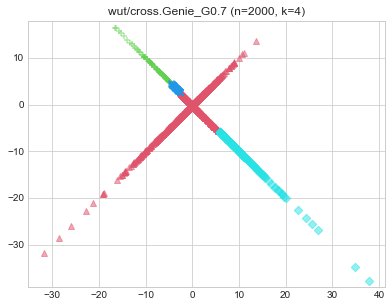 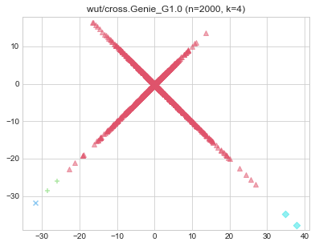 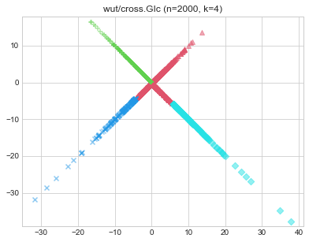 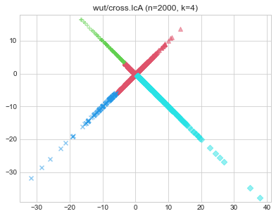 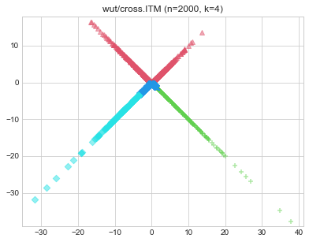 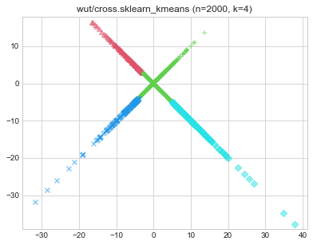 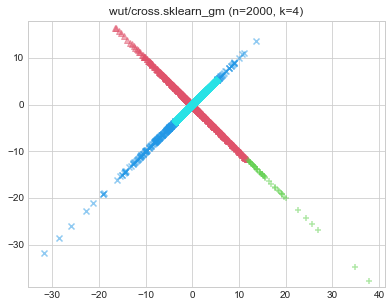
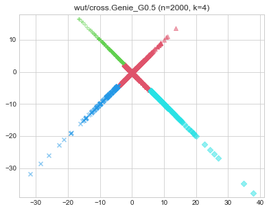 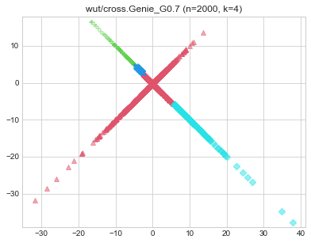 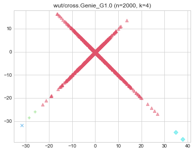 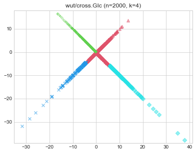 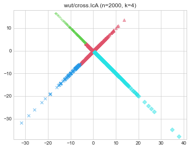 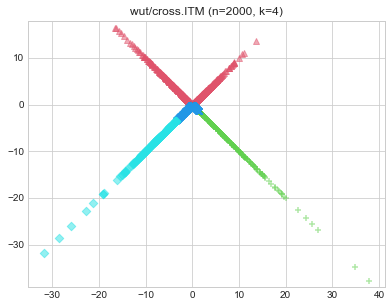 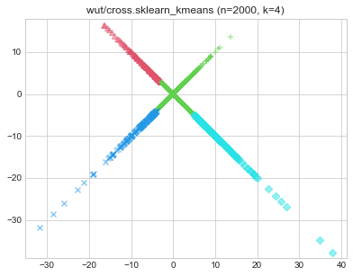 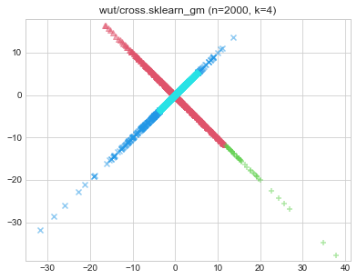
wut/graph (n=2500, d=2)
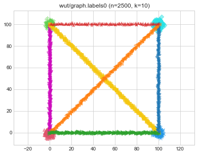 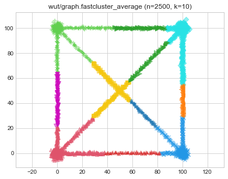 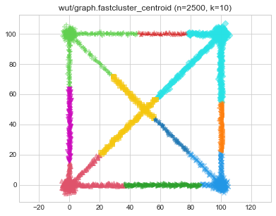 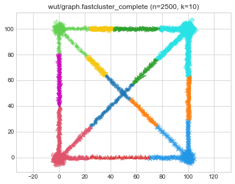 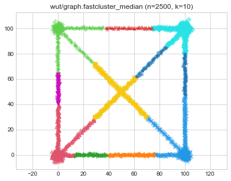 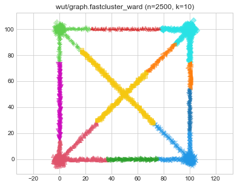 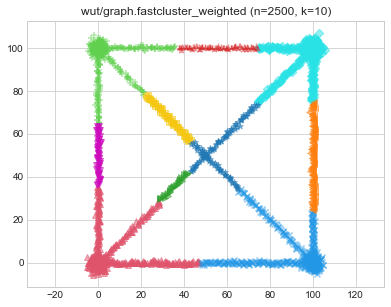 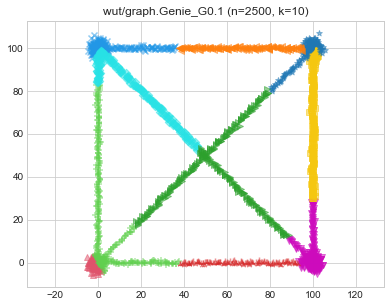 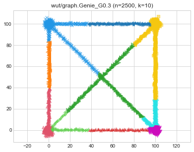 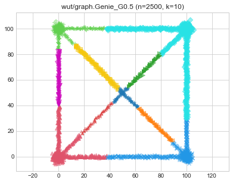 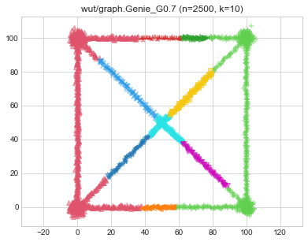 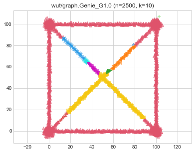 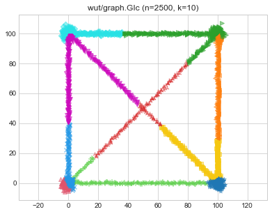 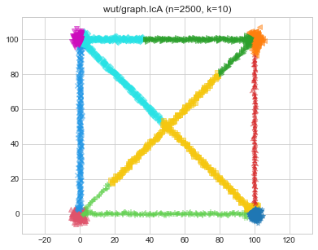 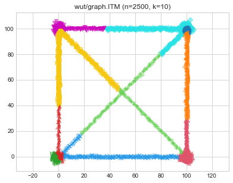 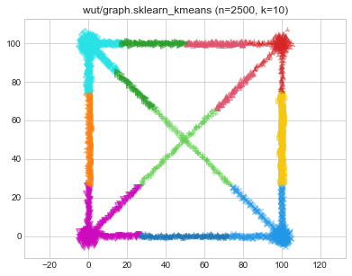 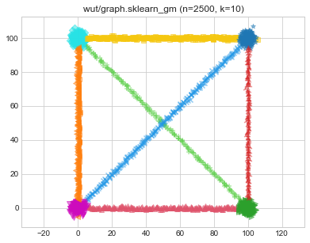
wut/isolation (n=9000, d=2)
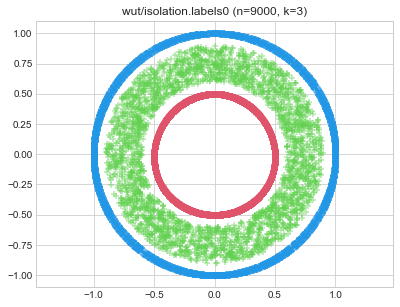 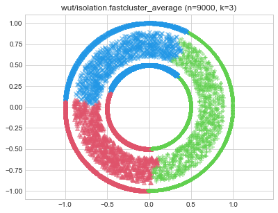 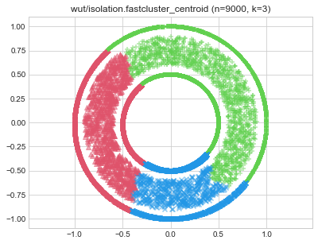 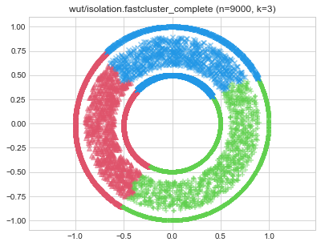 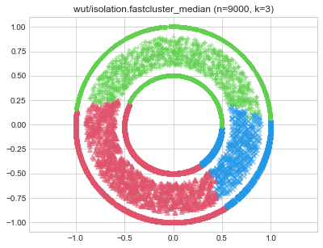 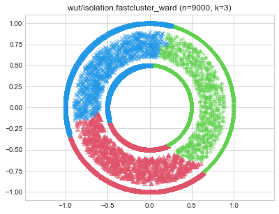
wut/labirynth (n=3546, d=2)

wut/mk1 (n=300, d=2)
wut/mk2 (n=1000, d=2)
wut/mk3 (n=600, d=3)
wut/mk4 (n=1500, d=3)
wut/olympic (n=5000, d=2)
wut/smile (n=1000, d=2)
wut/stripes (n=5000, d=2)
wut/trajectories (n=10000, d=2)
wut/trapped_lovers (n=5000, d=3)
wut/twosplashes (n=400, d=2)
wut/windows (n=2977, d=2)

wut/x1 (n=120, d=2)
wut/x2 (n=120, d=2)
wut/x3 (n=185, d=2)
wut/z1 (n=192, d=2)

wut/z2 (n=900, d=2)


wut/z3 (n=1000, d=2)